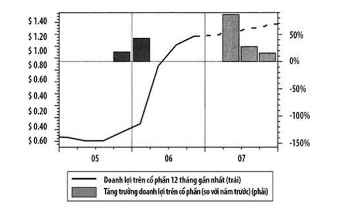

MỤC LỤC
CHƯƠNG SÁU
6.1.
Đây là tất cả các biến số
Tinh chỉnh chính xác để nhắm những cổ phiếu tốt nhất
CHO ĐẾN GIỜ CHÚNG TA ĐÃ XEM XÉT năm biến số quan trọng để giúp bạn phát hiện những cổ phiếu tốt nhất hiện nay:
1. Điều chỉnh lại doanh lợi
2. Những bất ngờ về doanh lợi
3. Tăng trưởng doanh thu
4. Lãi kinh doanh phình to
5. Luồng tiền mặt khả dụng
Như bạn đã biết, tôi dùng một công thức gồm tám yếu tố căn bản để nhắm tới việc hớt lớp kem trên những chiếc bánh kem là những cổ phiếu ở Wall Street. Tôi chắc rằng giờ bạn đã hiểu tám yếu tố này có ảnh hưởng hết sức to lớn đến tình trạng tài chính của một công ty và xét đến cho cùng giá cổ phiếu của nó. Vậy giờ hãy thật chú ý - tôi sắp sửa chỉ cho bạn cách áp dụng công thức đầy đủ này cho việc đầu tư. Thêm vào đó, tôi sẽ để bạn thực hành dùng cơ sở dữ liệu chấm điểm cổ phiếu thực tế của tôi. Nhưng trước hết, ta hãy xem xét từng cái một trong ba biến số còn lại trong công thức của chúng ta. Giờ đây, khi bạn đã hiểu năm biến số đầu tiên thì ba biến số còn lại sẽ khá đơn giản và dễ giải thích, cho nên tôi sẽ trình bày cả ba trong cùng một chương này. Tôi sẽ mô tả từng biến số và giải thích tại sao chúng lại quan trọng. Tôi sẽ cho ví dụ về mỗi biến số trong thực tế để bạn tự mình thấy được những biến số này có thể tác động mạnh mẽ như thế nào đến giá của cổ phiếu.
Như tôi đã giải thích, bất kỳ một biến số căn bản riêng rẽ nào cũng có thể có vai trò nổi bật trong một thời gian, và sau đó đột nhiên nó không còn như thế nữa. Trong thập niên 1970, giá trị theo sổ sách là yếu tố then chốt quyết định kết quả tương lai. Trong thập niên si mê sát nhập 1980, lợi tức gộp và doanh lợi kiếm được trước khi chi trả lãi vay cùng các khoản thuế, trừ đi khấu hao và thanh toán nợ kỳ hạn [1] là một trong những biến số then chốt. Những biến số thời thượng này thay đổi theo thời gian và thậm chí chúng có thể thay đổi rất nhanh. Có những thời kỳ cổ phiếu có nhiều bất ngờ về doanh lợi rất được ưa chuộng, và những thời kỳ khác thì tăng trưởng doanh thu chính là đòn bẩy đẩy giá cổ phiếu lên cao. Bằng cách chú ý đến tất cả tám biến số liên quan đến thành tích giá cổ phiếu, chúng tôi có thể tự tin rằng bất kể biến số đòn bẩy hiện nay là gì, chúng tôi vẫn nhận ra được những cổ phiếu sẽ chịu ảnh hưởng bởi xu hướng này. Như một phần thưởng thêm, vì chúng tôi còn đưa thêm vào những biến số khác ngoài cái được ưa thích của tháng, nên chúng tôi sẽ chỉ sở hữu những cổ phiếu chất lượng nhất trong nhóm đó.
Cái đầu tiên trong ba biến số còn lại và là biến số căn bản phổ biến nhất, là tăng trưởng doanh lợi (earnings growth). Tất cả những gì ta tìm ở đây là sự tăng trưởng của doanh lợi được báo cáo từ quý này sang quý khác, và từ năm này qua năm khác. Mỗi quý, các công ty phát hành một báo cáo cho biết họ đã làm ăn như thế nào trong ba tháng qua, họ mua bao nhiêu thứ, họ chi hết bao nhiêu, và họ làm ra bao nhiêu tiền. Kết quả ròng này được báo cáo trong tỉ số doanh lợi trên cổ phần [2] của công ty. Tính toán con số này khá đơn giản: chỉ cầm lấy tổng lợi nhuận của quý đó trừ đi cổ tức cho các cổ phiếu ưu đãi, rồi chia cho tổng số cổ phiếu đang lưu thông. Con số này sẽ cho ta biết doanh lợi có tăng mạnh từ năm này qua năm khác hay không. Cổ phiếu, xét cho cùng, được định giá dựa trên doanh lợi, vì thị trường rất coi trọng những con số EPS của từng quý. Một công ty có doanh lợi cao hơn từ năm này qua năm khác sẽ tự nhiên có giá trị hơn một chút sau mỗi lần báo cáo, và nhìn chung, giá cổ phiếu của nó sẽ tăng lên để phản ánh thực tế đó. America Movil, công ty viễn thông và mạng không dây Mexico, là một ví dụ tiêu biểu cho kiểu tăng trưởng doanh lợi đều đặn mà chúng tôi tìm kiếm mỗi khi lựa chọn những cổ phiếu tăng trưởng trong một thời kỳ dài. Vì America Movil báo cáo doanh lợi cao hơn từ năm này qua năm khác nên cổ phiếu của nó cũng có giá trị hơn qua từng năm. Kể từ năm 2004, cổ phiếu này đã tăng giá tới 300%.
Một ví dụ nổi bật khác về sự tăng trưởng doanh lợi đều đặn đã thu hút sự chú ý của các nhà đầu tư, làm cho giá cổ phiếu tăng cao hơn, đó là Google. Bắt đầu từ giữa năm 2005, Google bắt đầu báo cáo một chuỗi doanh lợi ngày càng cao hơn hết quý này đến quý khác. Kết quả là cổ phiếu này được người ta đổ xô tìm mua và nó đã tăng giá 70% một cách khá đều đặn kể từ đó đến giờ. (Xem hình 6.1)
Hình 6.1. Thành tích của cổ phiếu Google, từ giữa năm 2005 đến 05/2007
Không chỉ muốn thấy doanh lợi cao hơn từ năm này qua năm khác mà thậm chí chúng tôi còn muốn thấy trong quý này nó đã tăng lên nhiều hơn so với quý cùng kỳ năm ngoái. Nếu doanh lợi qua mỗi năm tăng 10% trong quý vừa qua, chúng tôi muốn thấy trong quý này chúng tăng lên còn nhiều hơn thế. Đây là nơi cho phép biến số tiếp theo của chúng tôi, đà tăng trưởng doanh lợi (earnings momentum), tham gia vào công thức. Để một cổ phiếu được xếp hạng cao vì biến số này, thì nó cần phải thể hiện một chuỗi doanh lợi gia tốc đều đặn qua mỗi quý. Có những thời kỳ biến số này tự nhiên trở thành một trong những biến số quan trọng nhất trong mô hình của chúng tôi. Khi thị trường đang trên đà tăng giá mạnh, đà tăng trưởng doanh lợi là một trong những lực dẫn dắt mạnh nhất đằng sau giá cổ phiếu. Có cả một trường phái đầu tư và thậm chí một nhật báo tài chính lớn, tờ Investor’s Business DailyR, chỉ dành cho việc đầu tư dựa trên đà tăng trưởng doanh lợi và những biến số căn bản quan trọng khác. Ngoài ra còn có hàng chục quỹ tương hỗ và quỹ đầu tư thanh khoản linh hoạt dùng đà tăng trưởng doanh lợi như căn cứ hàng đầu của họ để giao dịch mua bán và đầu tư.
Trên kia tôi đã giải thích rằng những người có cả đống tiền mặt có thể dốc vào một cổ phiếu và có được kết quả tích cực khi cổ phiếu này thu hút sức ép mua vào bền bỉ. Vì ta biết họ thích đà tăng trưởng doanh lợi và họ có thể khiến một cổ phiếu tăng giá một cách khá đều đặn, nên biến số này đóng một vai trò lớn trong hệ thống xếp hạng căn bản của chúng tôi. Một ví dụ thật sự nổi bật của điều này là Centerpoint Energy, một cổ phiếu hạng top vào giữa năm 2007. Centerpoint là một ví dụ đặc biệt tiêu biểu, bởi vì hầu hết mọi người đều có xu hướng nghĩ về những công ty hấp dẫn, nổi tiếng, được nói đến nhiều trên các chương trình tin tức tài chính và được điểm tin trên các tạp chí, báo chí và các dòng tít lớn của các website, nhưng Centerpoint Energy lại không phải một công ty nổi tiếng và cũng chẳng mấy khi được nhắc đến ở bất kỳ đâu. Xác suất để nghe được về công ty này ở các bữa tiệc cocktail, hay trên các sân golf, là khá nhỏ. Centerpoint bán điện và khí thiên nhiên. Họ trả cổ tức rất khá. Nhưng nhìn qua lăng kính của báo cáo doanh lợi thì khó mà nhận ra được chiếc ô tô không nhãn mác kia lại thực sự là chiếc xe đua mã lực cao. Như bạn thấy ở hình 6.2, Centerpoint đã liên tục tăng tốc doanh lợi trong năm 2006 và cổ phiếu này đã đền đáp hậu hĩnh cho những nhà đầu tư nào đã chú ý đến nó.
Hình 6.2. Doanh lợi trên cổ phần (EPS) của Centerpoint Energy
Để thấy tác động của những khối tiền lớn mà các quỹ tương hỗ và quỹ thanh khoản linh hoạt đang nắm giữ, bạn hãy nhìn hình 6.3, nó cho thấy giá cả hằng tháng của cổ phiếu Maidenform Company. Maidenform có lẽ còn có những sản phẩm khác hấp dẫn hơn năng lượng, nhưng về cơ bản đây là một công ty khá đơn giản, không gây nhiều sự ồn ào và kích động xung quanh cổ phiếu của nó. Khi tăng trưởng doanh lợi của công ty tăng tốc vào cuối năm 2005 và đầu 2006, tiếng tăm dậy lên và làm cho cổ phiếu này tăng hơn 100% chỉ trong một thời gian rất ngắn.

Hình 6.3. Doanh lợi trên cổ phần (EPS) của Maidenform
Biến số cuối cùng trong công thức tám yếu tố của chúng tôi là lợi suất trên vốn kinh doanh (return on equity - ROE). Đây là con số cực kỳ quan trọng và là một trong những con số được theo dõi nhiều nhất, chẳng phải riêng tôi mà hầu hết các nhà đầu tư khác cũng thế. Lợi suất trên vốn kinh doanh phản ánh tỉ lệ lãi làm ra trên tiền vốn đầu tư của các cổ đông. ROE được tính bằng cách chia thu nhập ròng cho vốn kinh doanh của các cổ đông. Thông tin được tiết lộ này rất quan trọng. ROE có thể cho ta biết công ty đang dùng hiệu quả tới mức nào với số tiền mặt mà nó tạo ra từ công việc kinh doanh. Tôi thích thấy ROE khởi đầu cao và rồi cao hơn. Nếu hệ số ROE tăng, tôi biết ngay ban quản lý đang thực hiện những việc nâng cấp và đầu tư một cách có hiệu quả, mà chúng sẽ làm tăng thu nhập trên số tiền tôi đã đầu tư vào công ty này. Nếu ROE thấp thì có lẽ công ty đã không dùng tiền một cách thông minh như tôi muốn.
Công ty nào có lợi suất cao trên tiền vốn của cổ đông sẽ khó lòng làm những việc gây xói mòn giá trị cổ phiếu, chẳng hạn như công bố một đợt phát hành cổ phiếu mới, hay đi vay tiền để giữ cho công việc làm ăn tiến triển, cả hai việc đó đều là những vấn đề tiêu cực điển hình đối với các cổ đông hiện tại. Tôi muốn biết rằng công ty có khả năng tạo ra số tiến nó cần từ các hoạt động làm ăn hàng ngày và có dư một số tiền mặt để phát triển công việc kinh doanh. Công ty nào có lợi suất rất cao tính trên những đồng USD đã được đầu tư, thường sẽ tạo ra luồng tiền mặt khả dụng mạnh.
ROE của một công ty cần được so sánh trong một nhóm công ty cùng ngành chứ không phải với toàn bộ các cổ phiếu thông thường. Một hãng tư vấn có thể có lợi suất trên vốn kinh doanh rất cao, đơn giản vì nó không có các tài sản thực. Tất cả tiền bạc được chi tiêu vào quảng cáo, marketing, cũng như mở các văn phòng mới. Những thứ này không thể hiện trong cột vốn kinh doanh. So sánh ROE của một hãng tư vấn, chẳng hạn với một hãng sản xuất thép phải đầu tư những khoản vốn khổng lồ vào nhà xưởng, nền đất và nguyên liệu thì đó thật sự không phải một sự so sánh công bằng. Vì vậy, hãy để mắt đến chỉ số ROE của một công ty so với những công ty cùng loại xem thế nào, chứ đừng đem táo so sánh với heo.
Tôi không biết phải nhấn mạnh sao cho đủ rằng bạn cần dùng tất cả những biến số mà ta đã xem xét trong khi tìm kiếm những cổ phiếu tăng trưởng chiến thắng thị trường để đưa vào danh mục đầu tư của bạn. Những cái được ưa chuộng nhất thời trên thị trường chứng khoán có lẽ thay đổi còn nhanh hơn cả đường đi của cơn bão mùa hè rình rập trên Đại Tây Dương ở Nam Florida. Bằng cách dùng tất cả những biến số quan trọng này, bạn có thể tự tin vào lúc cơn bão ập đến, bạn sẽ tìm thấy hầm trú ẩn (bằng cách bán những cổ phiếu hết tầm ảnh hưởng trong danh mục của bạn) và sẵn sàng để đón ánh nắng mặt trời chắc chắn sẽ hiện ra sau cơn bão.
[1]. Earnings before interest, taxes, depreciation, and amortization - viết tắt là EBITDA.
[2] . Earningspershare-EPS.